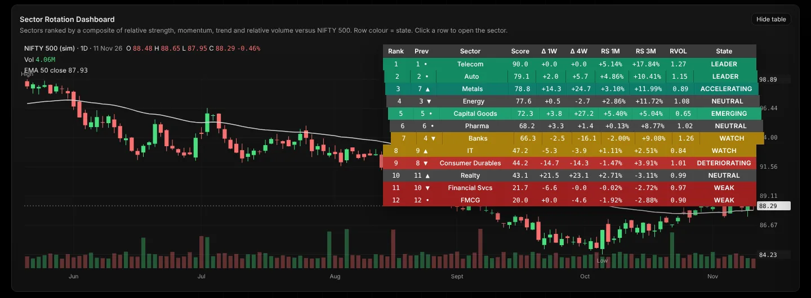
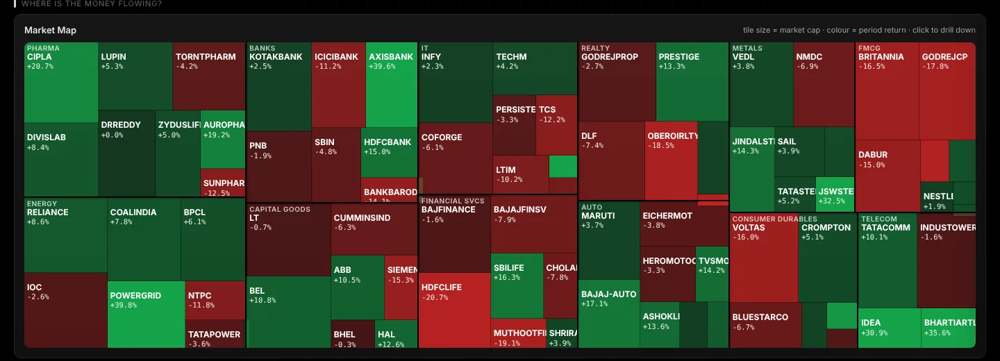
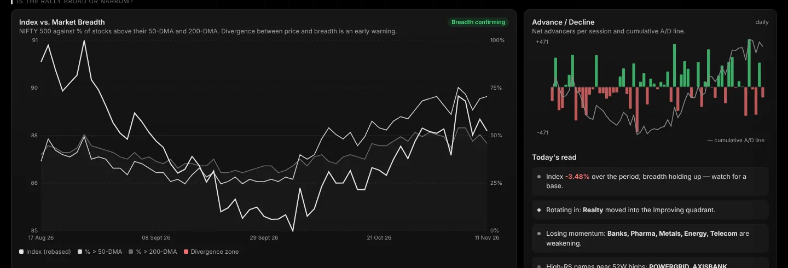
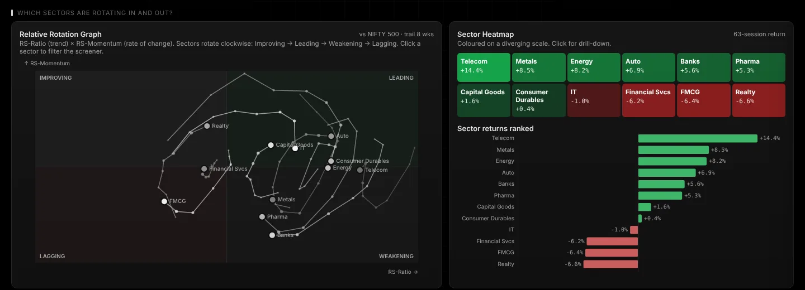
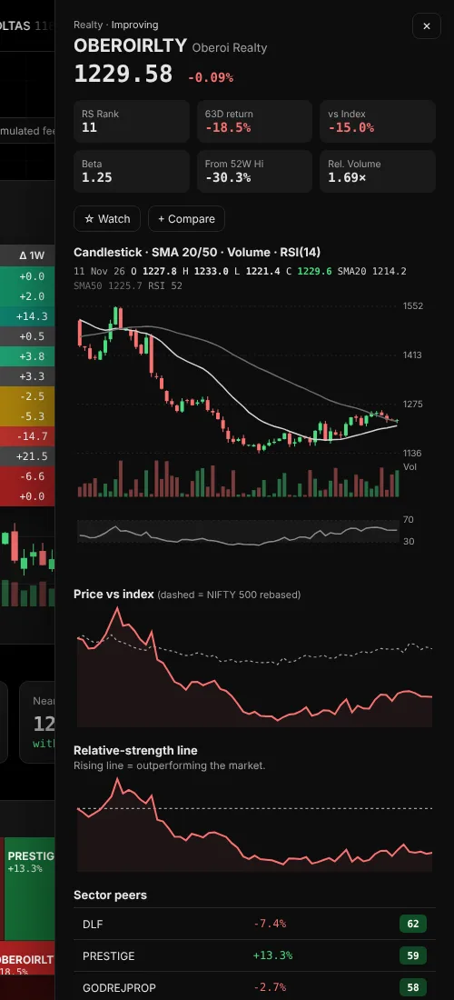
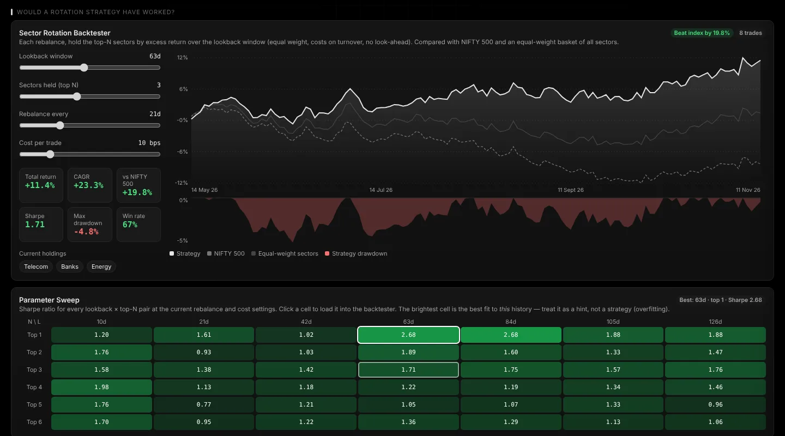
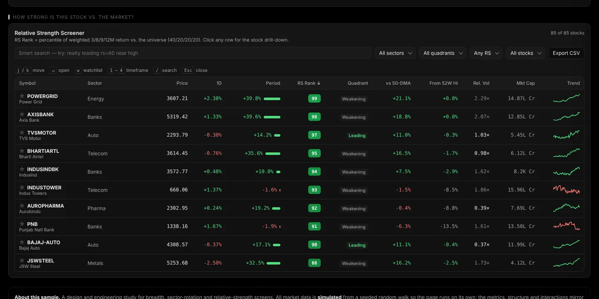

A redesign study for market breadth, sector rotation and relative-strength screens: the densest views in a trading analytics product. I designed and built it end to end, so every decision on this page can be clicked on in the live version.

Breadth and rotation tools usually show everything at once: dozens of columns, indicators stacked on indicators, and a different colour meaning for every widget. The data is all there, but the trader has to assemble the story themselves.
The goal was not to add more data. It was to get a trader from "opened the page" to "I know what the market is doing and where to look" in well under a minute, with the depth still one click away for the people who want it.
The active swing trader
Checks the market before the open and again mid-session. Wants a fast read on direction, participation and leadership, then a shortlist of stocks to look at.
The learning investor
Knows what a moving average is, isn't fluent in RRGs or A/D lines. Needs labels, plain-language reads and consistent colours to build trust.
Instead of grouping by chart type, I mapped the screens to the questions a trader actually asks in order, from the broadest to the most specific. Each section on the page is labelled with its question.
This order is also the progressive-disclosure path: summary at the top, detail as you scroll, full depth in the side drawer.
Green and red mean gain and loss, everywhere, and nothing else. Everything else is greyscale: sectors, accents, chrome. The heatmap, market map, RS badges and table cells all share one diverging scale, so a trader learns it once.
Trade-off: sector lines in the rotation graph can't be told apart by hue. I used labels on every trail head plus hover-to-isolate instead, and the colour stays meaningful.
The ranking table turns a composite score and its weekly/monthly change into a named state, colour-coded by row. "EMERGING" tells you what to do with a sector; "72.3, +27.2" makes you work it out.
Trade-off: states hide nuance, so the raw numbers stay in the row and the tooltip explains the rank change.
Every tile and row leads with one number. Click a stock or sector anywhere — market map, table, heatmap, search — and a side drawer opens with candles, SMA 20/50, volume, RSI, the RS line and sector peers. The main page never gets denser.
Trade-off: the drawer covers part of the page. It closes with Esc or ✕, and keeps the selected row highlighted so you don't lose your place.
A short "Today's read" panel writes out what the breadth and rotation data say in plain language (e.g. "Index up but breadth fell — the rally is narrowing"). Divergence zones are shaded directly on the chart instead of being left for the user to spot.
Trade-off: generated text can feel authoritative. The reads are rule-based and conservative, and they sit next to the chart they describe so users can check them.
All figures use tabular monospaced numerals so columns line up and change direction reads at a glance. Signs are always shown (+/−). Units are on the label, not repeated in every cell.
⌘K jumps to any stock or sector. j/k move through the screener, w adds to a watchlist, 1–4 switch the timeframe. The search box understands simple queries like realty leading rs>80 near high and shows how it read them as chips, so the syntax teaches itself.




A rotation view naturally raises the question "would following this have worked?" So I added a backtester: hold the top sectors by relative strength, rebalance on a schedule, pay realistic costs. Four sliders, results update as you drag, and a parameter sweep shows how fragile the best result is.
The design challenge here was honesty. The sweep says in plain words that the brightest cell is the best fit to past data, not a strategy, and the drawdown chart sits directly under the equity curve so risk is never hidden behind return.

Built token-first so every component inherits the same decisions, and so a light theme was a variable swap rather than a redesign.
| Token | Use |
|---|---|
| Inter 600, 13–30px | Titles, labels, section questions |
| JetBrains Mono, tabular | Every number: prices, returns, scores |
| Card · KPI tile · stat chip | Summary blocks with a sparkline |
| Data table | Sticky header, sort indicator, row hover, inline bars and badges |
| Chart card | Title + one-line explanation + chart + legend + tooltip |
| Menu / select | Icon, label, helper text, section headers, checked state |
| Drawer · palette · toast | Detail, navigation and feedback layers |

This is a self-initiated study, so the next step is putting it in front of real traders. What I'd want to learn:
| Question | How |
|---|---|
| Can a new user say whether the rally is broad within 30 seconds? | 5-second / first-click tests on the overview |
| Do the state names (Emerging, Watch…) match how traders talk? | Card sort and short interviews |
| Is the page order right, or do people jump straight to the screener? | Scroll and click analytics on a beta |
| Is the RRG understood without explanation? | Think-aloud sessions with learning investors |